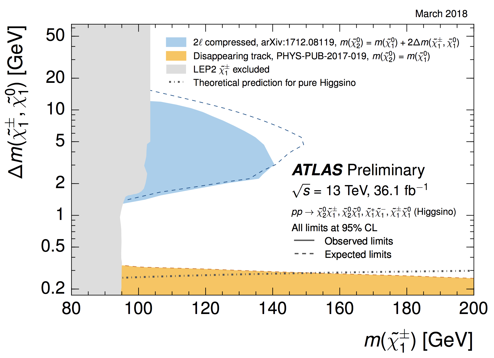
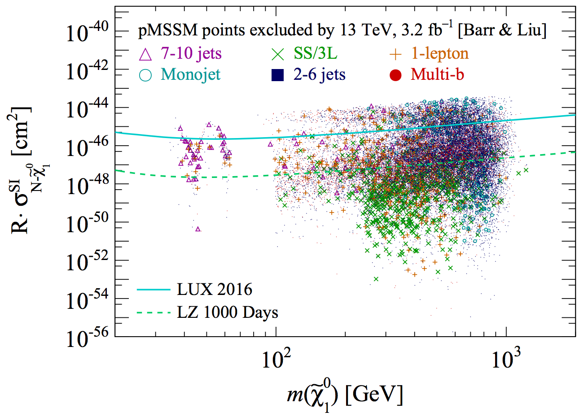
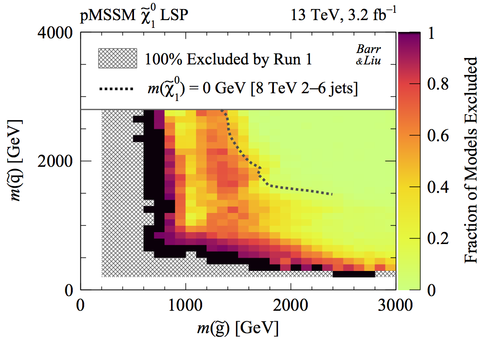

My research interests in particle physics concern designing experimental strategies to search for
new physics beyond the Standard Model, probing the Higgs sector, supersymmetry and dark matter. New discovery
frontiers are being opened by my work on the ATLAS detector and novel analysis strategies combined with
phenomenological studies of dark matter and photon collider physics.
New physics searches
When Galileo upgraded his telescope to study Jupiter more
closely, he did not anticipate unveiling new worlds in the process. He discovered the Galilean moons not
necessarily because he was looking for them, but because his instruments could see them. Today,
experimental searches for new physics continue this paradigm. I collaborate with scientists worldwide to
refine and extend the capability of our instruments inspecting the microcosm and measure what we can see
with greater precision. These advances could reveal phenomena we could never have
anticipated.
Supersymmetry and dark matter
A startling realisation of contemporary science is that 80%
of the matter in our universe is dark. Supersymmetry predicts new particles of dark matter that could be
discovered at the Large Hadron Collider. My PhD thesis interpreted collider and non-collider data to
identify promising parameter space of supersymmetric dark matter (pMSSM). I then proposed and led analyses
using the lowest momentum leptons in ATLAS to surpass nearly 2-decade old sensitivity (LEP) on scenarios
favoured by such phenomenology studies (Higgsino dark matter and compressed sleptons).
ATLAS and forward detectors
Particle detectors are our eyes to the microcosm. Their
development, operation and performance underpin measurement and discovery capability. I led operational
radiation damage studies of the ATLAS silicon tracker (SCT), crucial for identifying long-lived particles
such as bottom quarks. I also designed new hardware-based algorithms to select dark matter signatures in
real time with higher efficiency (L1 Topo trigger). Recently, I am commissioning ATLAS
Forward Proton (AFP) detectors, which measure the energy of intact protons, opening novel use of the LHC
as a photon collider.
LHC as a photon collider
Quantum electrodynamics (QED) is the theory of everyday life,
governing biochemical reactions to the optoelectronics displaying this text. Interestingly, the LHC offers
unique opportunities to design new energy frontier tests of QED. Electromagnetic fields surrounding
protons and heavy ions source an intense beam of high energy photons. These photons collide to make new
particles, which may include supersymmetry and dark matter. Such collisions allow measuring the complete
initial state and missing momentum four-vector for the first time at hadron colliders.
The origin of mass
The Higgs boson is an experimental triumph of big science
and its discovery opens study of new interactions. One tantalising prediction are Higgs bosons
interacting with themselves. I am studying how to probe this Higgs self-coupling using challenging final
states of four bottom quarks. I am developing strategies to exploit another never-before-seen quantum interference of two Higgs bosons. Experimentally observing and measuring these new
phenomena is crucial for understanding electroweak symmetry breaking that endows all particles with mass.
Theoretical physics
In my master's essay, I developed the field theory of
particles whose spin is labelled by an infinite tower of discrete quantum numbers (continuous-spin
particles). These particles arise from the mathematics of spacetime symmetries in our universe (Poincaré
group), and may be relevant for gravity and electromagnetism. In recent years, I have turned to
phenomenology bridging theory with experiment. I have performed dark matter interpretations of data from
the LHC, and I am currently devising new tests of QED and discovery strategies using photon collisions at
the LHC.
Papers
Phenomenology
Photon collider search strategy for sleptons and dark matter at the LHC
Lydia Beresford and Jesse Liu arXiv:1811.06465
In Situ Radiation Damage studies of Optoelectronics in the ATLAS SemiConductor Tracker
Ian Dawson, Bruce Gallop, Jesse Liu, Peter Miyagawa, Peter Phillips, Gavin Pownall, Dave Robinson and
Anthony Weidberg JINST 14 (2019) 07, P07014
Preliminary results: SCT-2018-003, SCT-2017-003, SCT-2016-002
I am author on all papers signed 'ATLAS Collaboration'.
Find a full list of my papers at inspire:
SLAC, Stanford University, USA , Joint Theory–Experiment Seminar, 20 Apr 2018 Perimeter Institute for Theoretical Physics, Canada, BSM Seminar, 17 Apr 2018 University of California, Santa Cruz, USA, SCIPP Seminar, 10 Apr 2018
'Supersymmetry: closing the gaps at the LHC'
Photon collider search strategy for sleptons and dark matter at the LHC
Lydia Beresford and Jesse Liu
arXiv:1811.06465
When LHC beams cross, photons from the proton electromagnetic fields can collide to
make new particles. The so-called ultra-peripheral events are exceptionally clean, with only QED
interactions involved at production. The protons remain intact, travel down the beampipe, and are detected
by very forward detectors. This allows us to reconstruct initital state information and the full missing
momentum 4-vector — impossible in usual head-on collisions. My collaborator and I exploit these
unique features to propose a search strategy that uncovers the blind spot where the slepton is 15 to 60
GeV heavier than the dark matter. Remarkably, this is the region favoured by non-collider data from
cosmology and muon magnetic moment measurements.
The soft lepton frontier for new physics
Analysing data collected by ATLAS to search for Higgsinos and compressed sleptons

Search for electroweak production of supersymmetric states in scenarios with
compressed mass spectra at sqrt(s)=13 TeV with the ATLAS detector
ATLAS Collaboration
arXiv:1712.08119, Phys. Rev. D 97 (2018) 052010
I had the privilege of collaborating with an excellent international analysis team for
this project.
This work presents the first hadron collider sensitivity to some of the most challenging but sought-after
scenarios of natural supersymmetry and dark matter involving so-called compressed mass spectra, namely
Higgsinos and compressed sleptons. We probed these using the two leptons and missing transverse momentum
final state, which were striking blind spots before Run 2 of the LHC. Soft lepton reconstruction down to 4
GeV — among the lowest used by the ATLAS Experiment — was crucial in opening world-leading
sensitivity that surpasses nearly two-decade old LEP limits.
The LHC interpretation challenge
How do we interpret the results of searches pursued by LHC experiments?
Analysing parameter space correlations of recent 13 TeV gluino and squark searches in
the pMSSM
Alan Barr and Jesse Liu
arXiv:1608.05379, Eur. Phys. J. C (2017) 77: 202.

LHC supersymmetry searches are designed around simplified models. These
capture the key experimental kinematic (e.g. jet energies) and structural (e.g. number of electrons)
features in a collision. But beyond this model-independent characterisation of signatures, they are toy
models for interpretation. If our universe were supersymmetric, how do the sensitivity of these searches
map onto realistic scenarios? This is the LHC interpretation challenge, and addressing this is
the purpose of our paper.
First interpretation of 13 TeV supersymmetry searches in the pMSSM
Alan Barr and Jesse Liu
arXiv:1605.09502

This is the first interpretation of six early 13 TeV ATLAS searches for supersymmetry within the
19-parameter 'phenomenological MSSM' theoretical framework. This work was referenced by severalspeakers at major summer conferences, and used by the SUSY-AI Online effort.